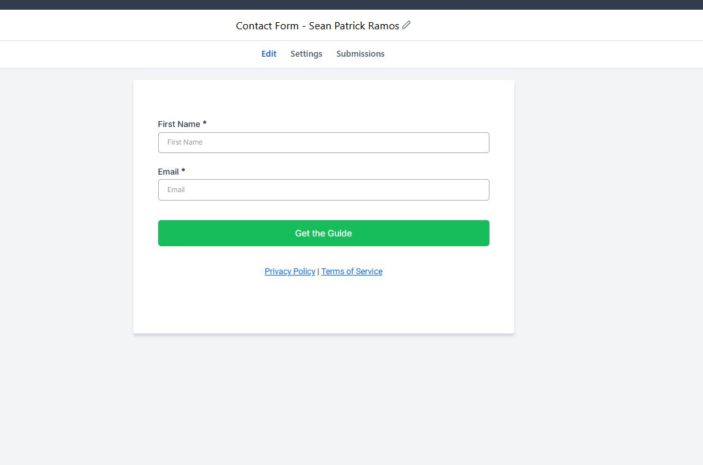
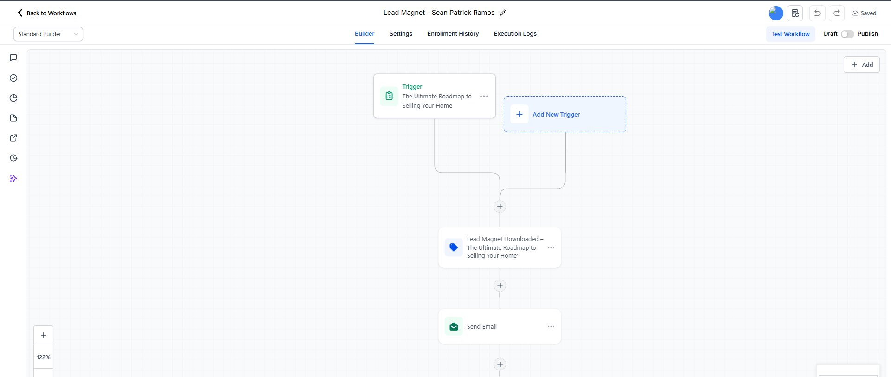
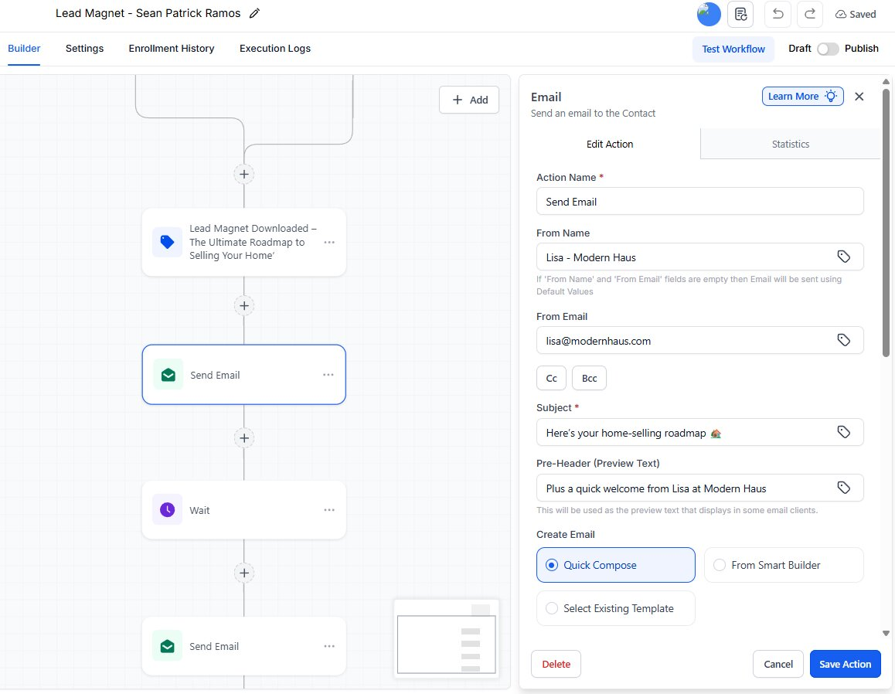
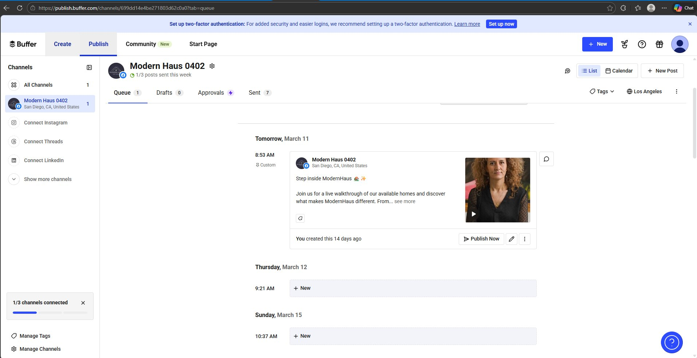
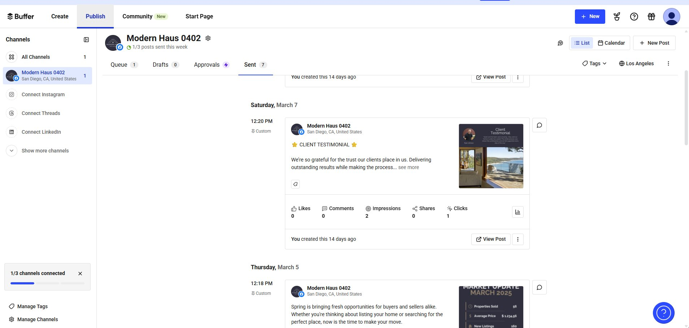
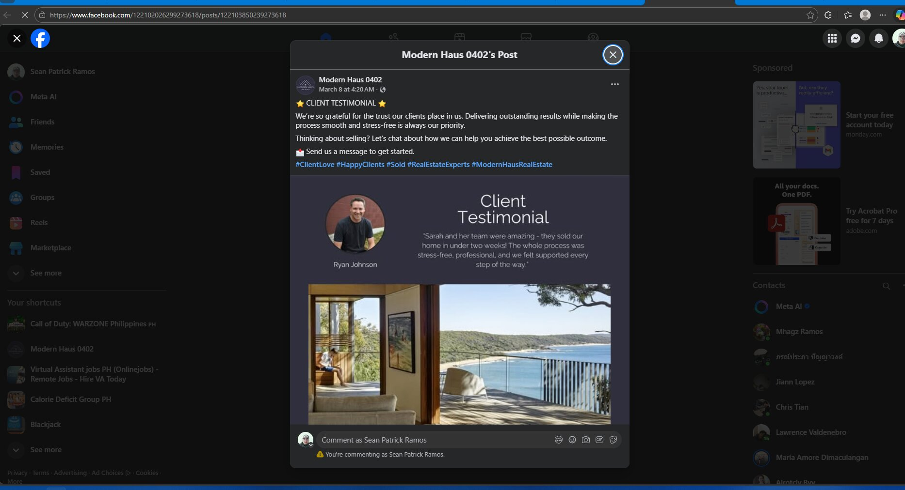
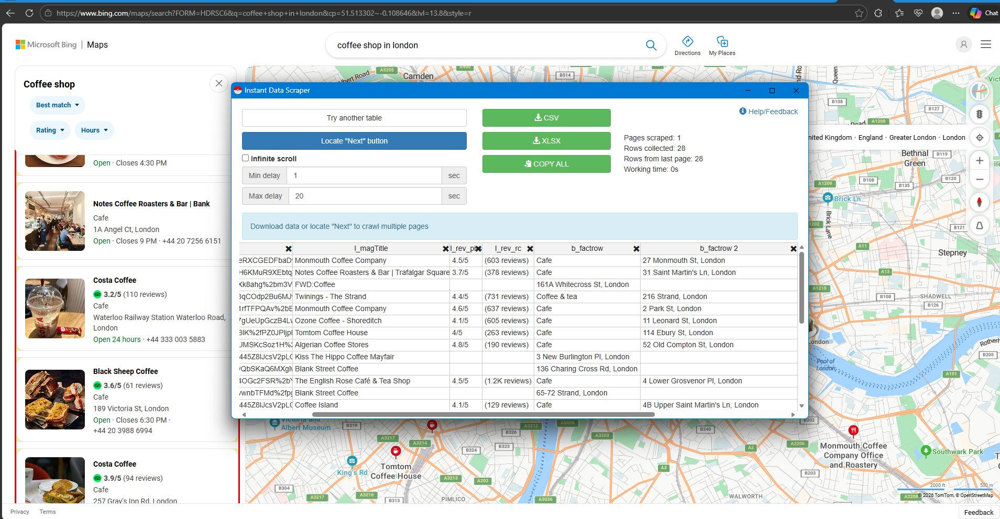
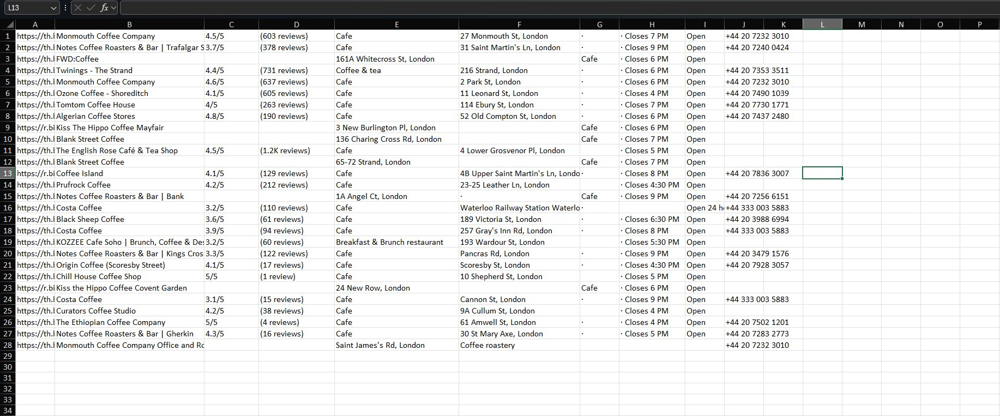

Marketing & Lead Generation



Image 1GHL Funnel and Form Automation(Sample Data)
Developed a GoHighLevel (GHL) funnel with integrated form automation using conditional logic. When a user submits the form, the workflow automatically delivers a downloadable lead magnet and enrolls the contact into a timed email sequence. The follow-up emails were designed using HTML and CSS to create a clean layout and more professional email presentation.
- Integrated GHL forms directly into funnel pages for lead capture
- Configured if/else conditions to control user actions after form submission
- Automated delivery of a downloadable lead magnet to users
- Designed email templates using HTML and CSS for improved layout and readability
- Created automated email sequences with wait times between messages
- Organized funnel workflow to nurture leads over several days
Tools Used



Image 1Content Scheduling(Demo Account)
Managed social media content scheduling using Buffer to maintain consistent posting across platforms. This workflow focused on planning, organizing, and scheduling marketing content in advance while monitoring engagement directly on Facebook to evaluate post performance.
- Planned and scheduled marketing posts using Buffer to ensure consistent publishing
- Organized content calendars to streamline social media posting workflows
- Monitored engagement metrics such as likes, comments, and reach on Facebook
- Improved content consistency and reduced manual posting effort
Tools Used


Image 1Lead Generation Using Location-Based Scraping
Conducted lead generation by identifying target business categories and locations, then collecting publicly available contact information using scraping tools and Google Maps search results.
- Identified target business category in specific locations
- Used search tools and Google Maps to locate potential business leads
- Utilized scraping tools to extract publicly available information including business name, location, and phone number
- Compiled and organized collected leads into structured lists for outreach and marketing use
- Streamlined the process of gathering local business data for targeted lead generation